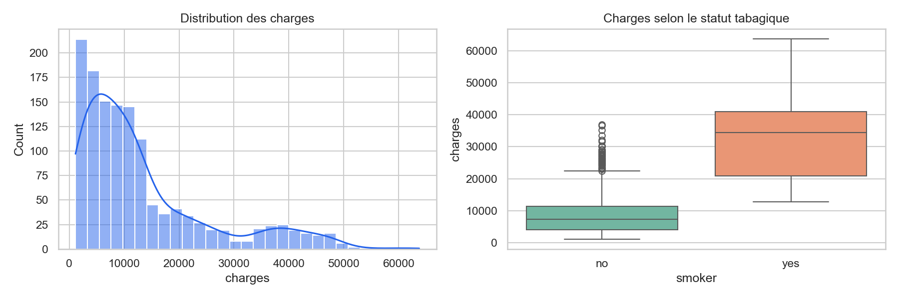

1338 lignes, 7 variables, 1 doublon(s), 0 valeur(s) manquante(s). Les valeurs physiquement impossibles sont exclues ; les valeurs extrêmes sont conservées car elles représentent un risque assuré réel.
Les charges sont fortement asymétriques (skewness=1.52), ce qui motive le GLM Gamma à lien log et l'évaluation par MAE/RMSE.

Le test de Mann-Whitney confirme la différence de distributions entre fumeurs et non-fumeurs (p=5.75e-130). Taille d'effet de Cohen d=2.57. L'ANOVA par région donne p=0.033; le chi² région-tabagisme donne p=0.064.
| Modèle | RMSE | MAE | R² |
|---|---|---|---|
| Ridge | 4,650 | 2,930 | 0.882 |
| Lasso | 4,839 | 3,042 | 0.873 |
| GLM Gamma log | 5,590 | 3,449 | 0.830 |
| Random Forest | 4,414 | 2,439 | 0.894 |
| Gradient Boosting | 4,283 | 1,556 | 0.900 |
Split 80/20 fixe, validation croisée K-fold (5 plis), encodage one-hot, standardisation des variables numériques et interactions âge/IMC avec le tabagisme. Jeu de données synthétique/éducatif, non représentatif d'un portefeuille réel, sans causalité ni usage médical. Une calibration temporelle, une validation externe et l'étude de la fréquence des sinistres seraient nécessaires en production.